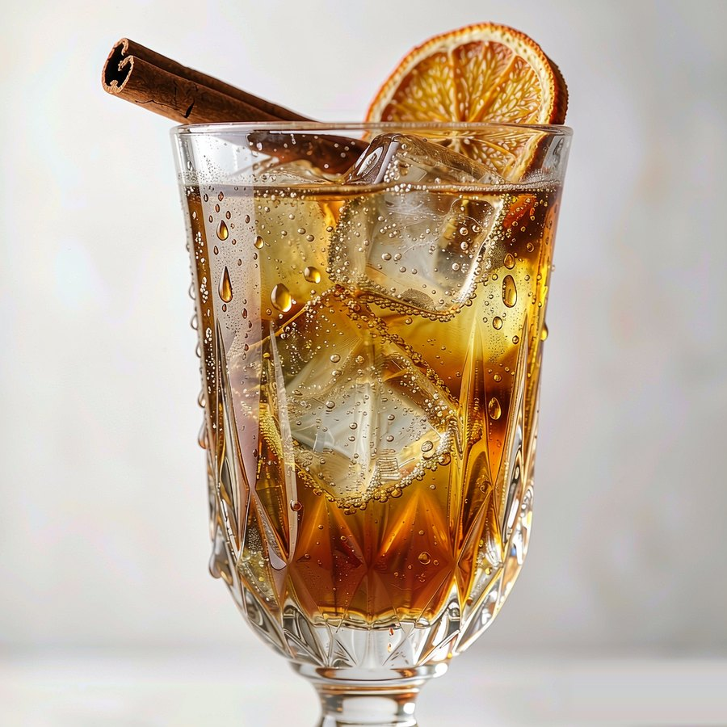
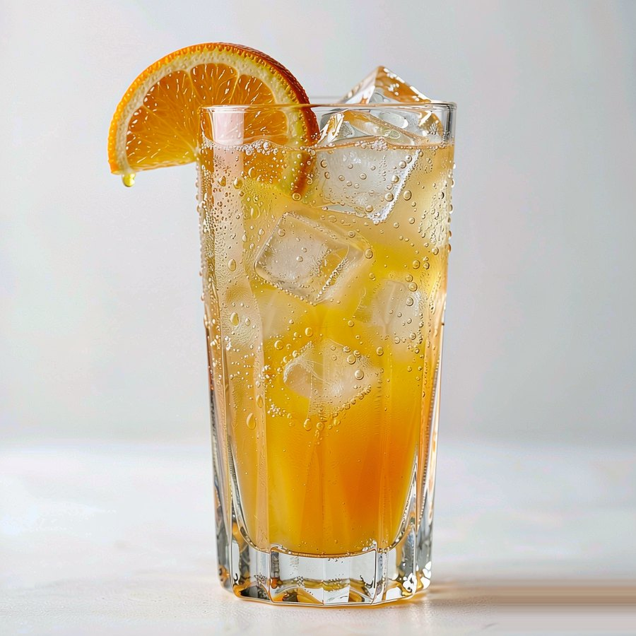
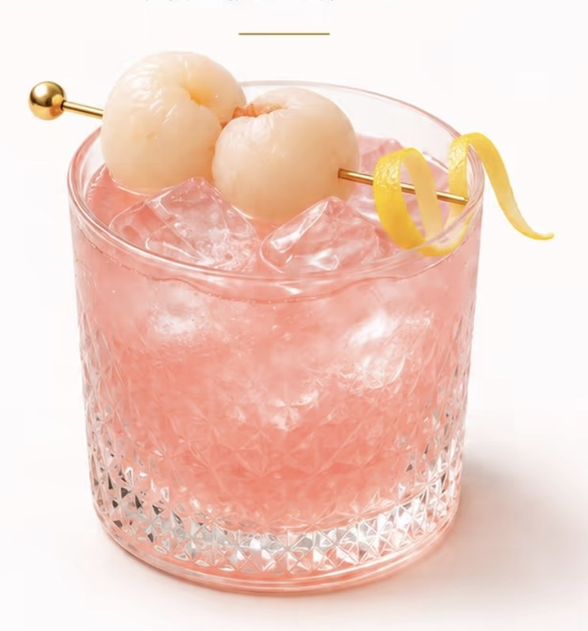
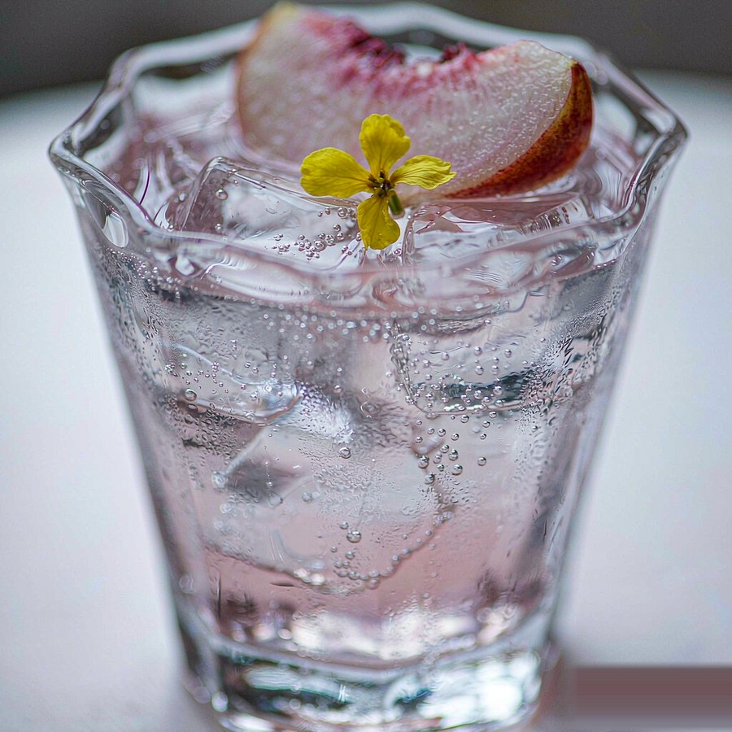
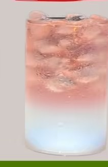

Culture & Terroir · 九千年的一杯
酒文化 · 产地
酒从来不只是酒精。它是祭祀的礼器、诗人的下酒句、河谷里的微生物、港口边的橡木桶。这一页沿着时间线看酒怎么走到今天，再按产区看风土如何写进味道，最后读几首关于酒的中国诗。
建议按「时间线 → 产区 → 诗词 → 酒礼」的顺序读；只想查某个地方，直接用产区标签切换更快。

Timeline · 时间线
从贾湖陶罐，到便利店的冰杯
点开任意一个时代，看那一杯酒背后的技术与生活。默认展开第一段。八段按时间从早到晚排列：先看发酵与酒器，再看蒸馏、作坊与现代评酒体系。

Terroir · 产地
风土：同一株葡萄，不同的山坡
土壤、气候、水源与微生物，决定了原料的糖、酸与香气前体。切换产区标签，看 15 个地方各自酿出了什么；右侧配图与图注会跟着大区一起换。

Poetry · 诗里的酒
古人没有冰箱，但有月亮
中国诗里的酒，多半不是豪饮，而是一个人对着月亮、雪夜或远方朋友的那一杯。下面四首按「独酌 / 边塞 / 邀友 / 问月」的情绪排列，读的是人，不是酒量。

Notes · 文化拾遗
酒桌之外，还有这些讲究
四条都能直接用在酒桌上：座次与敬酒、酒器怎么变、各国酒礼怎么喝、不懂酒怎么点单。点开看细节；规矩可以变通，「不劝酒」这条不变。
酒礼与座次：中国酒桌的隐形规则
传统宴席讲究「主陪、副陪、主宾、副宾」的座次，敬酒从主宾开始、按顺时针推进；碰杯时杯沿略低于对方是敬意。现代小聚不必照搬，但两条底线值得保留：不强行劝酒，不拿「不喝就是不给面子」绑架别人。真正的酒礼，是让每个人都舒服。
酒器简史：从青铜爵到玻璃杯
商周用青铜爵、角、尊祭祀；汉代流行漆耳杯与羽觞；唐代金银器与瓷盏并行，「葡萄美酒夜光杯」说的正是西域玉杯；宋代建盏、青白瓷把点茶与饮酒分开；明清以后玻璃与瓷器普及。今天调酒用的高球杯、古典杯、马天尼杯，本质都是为温度、气泡与香气服务的容器。
世界酒礼小对照：清酒、葡萄酒、威士忌
日本清酒讲究斟满与互换酒杯，干杯后先小口；法国葡萄酒讲究观色、闻香、品味，倒酒只倒三分之一；苏格兰威士忌可以加水或冰，但纯饮时先闻后抿。规则各不相同，共同点是：慢一点，让酒在杯里多待一会儿。
酒吧点单：不懂酒也能点得体面
告诉调酒师三件事：喜欢的基酒（或「没有偏好」）、酸甜偏好（偏酸/偏甜/清爽/浓烈）、酒精强度（低度/标准/烈）。不知道点什么，就从金汤力、威士忌高球或莫吉托开始——这三杯几乎不会踩雷。不想喝酒时，点无酒精特调也完全正常。
